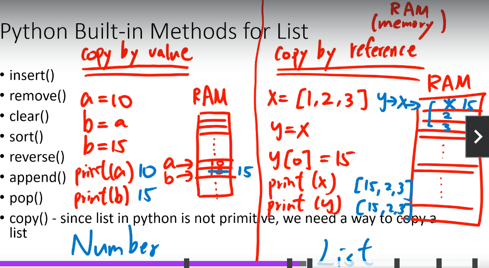

1. 基础类型
- 24.8.26 created
- 24.8.27 22:41 updated
1.1. 注释
# 单行注释"""多行注释"""
1.2. print
如何输出多份内容？
print(内容1, 内容2, 内容3, ..., 内容N)
1.3. type
查看数据类型
print(type("字符串")) # <class 'str'>
print(type(666)) # <class 'int'>
print(type(3.14)) # <class 'float'>
> 在`python`中，变量是没有类型的，变量存储的数据是有类型的。
## 关键字
False True None and as class def elif except from lambda nonlocal not or pass raise yield
## 字符串格式化
* %s：将内容转换成字符串
* %d：将内容转换成数字
* %f：将内容转换成浮点型
```python
class_num = 57
avg_salary = 16432
message = "Python大数据科学，北京%s期，毕业平均工资：%s" % (class_num, avg_salary)
print(message)
输出：
Python大数据科学，北京57期，毕业平均工资：16432
1.4. 数字精度控制
num1 = 11
num2 = 11.345
print("数字11宽度限制5，结果：%5d" % num1) # 宽度5，补了3个空格
print("数字11宽度限制1，结果：%1d" % num1) # 宽度小于数字本身，无影响
print("数字11.345宽度限制7，小数精度2，结果：%7.2f" % num2) # 宽度7，补了2个空格，小数精度2，四舍五入后.34
print("数字11.345不限制宽度，小数精度2，结果：%.2f" % num2) # 不限制宽度，小数点后四舍五入后为.35
输出：
数字11宽度限制5，结果： 11
数字11宽度限制1，结果：11
数字11.345宽度限制7，小数精度2，结果： 11.35
数字11.345不限制宽度，小数精度2，结果：11.35
快速格式化：
name = "baidu"
set_up_year = 2006
stock_price = 19.99
print(f"我是{name}，我成立于：{set_up_year}，我今天的股票价格是：{stock_price}")
输出：
我是baidu，我成立于：2006，我今天的股票价格是：19.99
1.5. input
# 获取键盘输入
name = input("请告诉我你是谁？")
print("我知道了，你是：%s" % name)
VSCode无法输入，待解决
1.6. 操作符
print(10 + 5)
print(10 - 5)
print(10 * 5)
print(10 / 5) # 2.0
print(10 % 5) # 0
print(10 % 3) # 1
# 指数
print(2 ** 3) # 8
print(3 ** 2) # 9
# 取整除
print(10 // 5) # 1
1.7. 数学函数
- 绝对值：abs()
- 指数：pow()
- 最大：max()
- 最小：min()
- 四舍五入：round()
# abs
print(abs(-5)) # 5
print(abs(5)) # 5
# pow
print(pow(2, 10)) # 1024
# min max
print(min(4, 2, 1, -10, 100, -7)) # -19
print(max(4, 2, 1, -10, 100, -7)) # 100
# round
print(round(2.6)) # 3
print(round(2.5)) # 2
print(round(3.5)) # 4
# x.5 the values will be rounded up if the roundup value is an even number
# otherwise, it will be rounded down.
# x.5的情况，如果四舍五入的值是偶数，就向上取整；否则，向下取整。
1.8. 类型转换
built-in methods（typecasting）
- str()
- int()
- float()
# type casting
print(int(3.0)) # 3
print(float(3)) # 3.0
print(str(3)) # 3
print(str(3) + str(3)) # 33
print(3 + 3) # 6
1.9. import math
- e
- pi
- 向下取整：floor()
- 向上取整：ceil()
- 开根号：sqrt()
import math
print(math.e) # 2.718281828459045
print(math.pi) # 3.141592653589793
print(math.floor(3.8)) # 3
print(math.ceil(3.8)) # 4
print(math.sqrt(36)) # 6.0
1.10. string使用
uppper、lower:
name = "Chenchangqing"
print(len(name)) # 13
print(name.upper()) # CHENCHANGQING
print(name.lower()) # chenchangqing
print(name) # Chenchangqing
isupper、islower:
name = "Chenchangqing"
print(name) # CHENCHANGQING
print(name.isupper()) # False
print(name.islower()) # False
name = name.upper()
print(name.upper().isupper()) # True
index:
name = "Chenchangqing"
print(name.index("e")) # 2
print(name.index("en")) # 2
replace:
name = "Josh Donaldson"
print(name.replace("J", "K")) # Kosh Donaldson
split:
sentence = "Today is a good day."
print(sentence.split(" ")) # ['Today', 'is', 'a', 'good', 'day.']
list:
sentence = "Today is a good day."
print(list(sentence)) # ['T', 'o', 'd', 'a', 'y', ' ', 'i', 's', ' ', 'a', ' ', 'g', 'o', 'o', 'd', ' ', 'd', 'a', 'y', '.']
format:
# string, number, boolean, dict, set, tuple, list
print("I have a string {}".format(["fjsd", "fjsdklf"])) # I have a string ['fjsd', 'fjsdklf']
print("{}, {}, {}".format(20, "here is another string", 3.14)) # 20, here is another string, 3.14
print("{2}, {1}, {0}".format(20, "here is another string", 3.14)) # 3.14, here is another string, 20
print("{3}, {1}, {2}".format(20, "here is another string", 3.24, 35)) # 35, here is another string, 3.24
print("{name}, {address}, {age}".format(
name="Wilson", age=25, address="china")) # Wilson, china, 25
fstring(python 3.6有的):
myName = "Wilson"
age = 25
print(f"Hello, my name is {myName}, I am {age} years old.")
count(指定字符串出现次数):
string = "Good day is a good day"
print(string.count("good")) # 1
print(string.lower().count("good")) # 2
find:
string = "Good day is a good day"
print(string.find("good")) # 14
print(string.find("good1")) # -1
print(string.index("good1")) # ValueError: substring not found
index可以用于list、tuple、string，而find只用于string
startswith、endswith:
name = "Wilson"
print(name.startswith("n")) # False
print(name.endswith("n")) # True
修改string的错误方式：
myString1 = "hello"
myString1[0] = "H" # 错误的
通过重新给变量赋值修改string：
name = "Sam Donaldson"
name = 'P' + name[1:]
print(name) # Pam Donaldson
Keep in mind that Python built-in methods don`t modify the string itself.
string乘以数字:
print("Wilson" * 10) # WilsonWilsonWilsonWilsonWilsonWilsonWilsonWilsonWilsonWilson
错误的方式：
print("Wilson" * 5.5)
print("Wilson" * "10")
截取字符串: "字符串"[开始位置:结束为止:步长(默认1)]
print("hello"[0]) # h
print("hello"[-1]) # o
print("hello"[1:4]) # ell
print("hello"[1:]) # ell
print("hello"[:4]) # el
print("hello"[1:4:2]) # hell
print("hello"[::-1]) # reversed
1.11. list使用
list倒序：
luckyNumbers = [2, 3, 4, 5, 6, 7, 10]
print(luckyNumbers[::-1]) # [10, 7, 6, 5, 4, 3, 2]
list长度：
luckyNumbers = [2, 3, 4, 5, 6, 7, 10]
print(len(luckyNumbers)) # 7
list元素出现次数：
x = [1, 2, 1]
print(x.count(1)) # 2
list元素位置：
x = [1, 2, 1]
print(x.index(1)) # 0
list相加：
x = [1, 2, 1]
y = [3, 4, 5]
print(x + y) # [1, 2, 1, 3, 4, 5]
乘以数字：
x = [1, 2, 1]
print(x * 2) # [1, 2, 1, 1, 2, 1]
修改list：
x = [1, 2, 1]
x[1] = 10
print(x) # [1, 10, 1]
list排序：
# 默认字母排序
friends = ["Wilson", "Mike", "Nelson", "Greg", "Jimmy"]
friends.sort()
print(friends) # ['Greg', 'Jimmy', 'Mike', 'Nelson', 'Wilson']
# 数字排序
numbers = [4, -3, 6, 1, 3, 2]
numbers.sort()
print(numbers) # [-3, 1, 2, 3, 4, 6]
反转：
numbers = [4, -3, 6, 1, 3, 2]
numbers.reverse()
print(numbers) # [2, 3, 1, 6, -3, 4]
append:
x = ["a", "b", "c"]
x.append("d")
x.append(15.0)
print(x) # ['a', 'b', 'c', 'd', 15.0]
pop:
x = ["a", "b", "c"]
lost_element = x.pop()
print(x) # ['a', 'b']
print(lost_element) # c
list之copy:
x = [1, 2, 3]
y = x.copy()
y[0] = 15
print(x) # [1, 2, 3]
print(y) # [15, 2, 3]
list中放list:
x = [1, 2, [4, 5, 6], 2, 1, [4, 3, [-10, 4]]]
print(x[2][1]) # 5
取list最后一个元素:
x = [1, 2, 3]
print(x[len(x) - 1]) # 3
1.12. Copy by Value or Reference
修改listy的同时也修改了listx：
x = [1, 2, 3, 4, 5, 6]
y = x
y[0] = 15
print(x) # [15, 2, 3, 4, 5, 6]
print(y) # [15, 2, 3, 4, 5, 6]
修改stringb，不会修改stringa
a = 10
b = a
b = 15
print(a) # 10
print(b) # 15
从上面的输出可以看出修改list和修改string的机制上是不一样的，如图： 
Copy By Reference:
- List
- Dictionaries
- Tuples
- Sets
Copy By Value:
- Integer
- Float
- String
- Boolean
修改list是
copy by reference，修改string是copy by value
1.13. dictionary使用
取值：
person = {"name": "Wilson", "age": 15}
print(person["name"]) # Wilson
修改：
person = {"name": "Wilson", "age": 15}
person["name"] = "Grace"
print(person) # {'name': 'Grace', 'age': 15}
keys:
person = {"name": "Wilson", "age": 15}
print(person.keys()) # dict_keys(['name', 'age'])
values:
person = {"name": "Wilson", "age": 15}
print(person.values()) # dict_values(['Wilson', 15])
items:
person = {"name": "Wilson", "age": 15}
print(person.items()) # dict_items([('name', 'Wilson'), ('age', 15)])
dictionarykey的特点：
- 不可变
- 实现hashable
可以作为key的类型：integer,float,boolean, string, tuple。如果list想作为key，则可以转为tuple。
tuple就是不可变的list。
1.14. tuple使用
取值：
myTuple = (10, "100", "Hello")
print(myTuple[0:2]) # (10, '100)
- len、index、count 也可以使用
因为tuple是不可变得，所以pop、append、sort等修改方法不可用。
特性一：打包
x = 10, 15
print(x) # (10, 15)
print(type(x)) # <class 'tuple'>
特性二：解包
# 赋值1
x = ("a", 25)
name, age = x
print(name) # a
print(age) # 25
# 赋值2
a, b = (15, 100)
print(a)
print(b)
# 交换
x = 25
y = 35
x, y = y, x
print(x) # 35
print(y) # 25
在tuple中存在可变类型，可以修改可变对象，但是这样的tuple不可以作为key：
a = ([1, 2, 3], "Wilson")
a[0][1] = 100
print(a) # ([1, 100, 3], 'Wilson')
1.15. set使用
- 无序
- 元素实现hashable
- 元素唯一
第一个set：
mySet = set({1, 2, 3})
print(mySet) # {1, 2, 3}
list去重复：
myList = [1, 4, 3, 2, 5, 1, 5]
mySet = set(myList)
print(mySet) # {1, 2, 3, 4, 5}
add:
s = set()
s.add(1)
print(s) # {1}
discard:
s = set({1, 2, 3})
s.discard(3)
print(s) # {1, 2}
clear:
s = set({1, 2, 3})
s.clear()
print(s) # set()
difference:
a = {1, 3, 4, 5}
b = {3, 4, 7, 8}
# a - b
print(a.difference(b)) # {1, 5}
print(b.difference(a)) # {8, 7}
intersection:
a = {1, 3, 4, 5}
b = {3, 4, 7, 8}
print(a.intersection(b)) # {3, 4}
print(b.intersection(a)) # {3, 4}
union:
a = {1, 3, 4, 5}
b = {3, 4, 7, 8}
# a - b
print(a.union(b)) # {1, 3, 4, 5, 7, 8}
print(b.union(a)) # {1, 3, 4, 5, 7, 8}
isdisjoint:
a = {1, 2}
b = {3, 4}
print(a.isdisjoint(b)) # True
issubset, issuperset:
a = {1, 2}
b = {1, 2, 3, 4}
print(a.issubset(b)) # True
print(b.issuperset(a)) # True
1.16. boolean
- True
- False
x = True # Constant必须首字母大写，`None`也是大写
print(x) # True
https://docs.python.org/3/library/constants.html
1.17. nj
x = 3 + 4j
y = 5 - 7j
print(x + y) # (8-3j)
1.18. none
def hello():
print("hello")
print(hello) # <function hello at 0x10ce422a0>
print(hello()) # None
1.19. floating binary problem
print(0.1 + 0.2 - 0.3) # 5.551115123125783e-17
1.20. join
myList = ["a", "b", "c"]
myString = "|".join(myList)
print(myString) # a|b|c
1.21. sort & sorted
- sort会改变原对象
- sorted不会改变原对象
sorted list:
x = [4, 2, 3, 1]
y = sorted(x)
# the list x is [4, 2, 3, 1] .
print("the list x is", x, ". Also, the list y is ", y)
z = sorted(x, reverse=True)
# the list x is [4, 2, 3, 1] . Also, the list z is [4, 3, 2, 1]
print("the list x is", x, ". Also, the list z is ", z)
sort tuple:
x = (4, 2, 3, 1)
y = sorted(x)
print(x) # (4, 2, 3, 1)
print(y) # (1, 2, 3, 4) 类型变了
sort dict keys:
x = {"name": "Wilson", "age": 25}
y = sorted(x)
print(x) # {'name': 'Wilson', 'age': 25}
print(y) # ['age', 'name']
sort set:
x = {4, 5, 3, 2, 1}
y = sorted(x)
print(x) # {1, 2, 3, 4, 5}
print(y) # [1, 2, 3, 4, 5]
sort string:
x = "How are you doing today?"
y = sorted(x)
print(x) # How are you doing today?
# [' ', ' ', ' ', ' ', '?', 'H', 'a', 'a', 'd', 'd', 'e', 'g', 'i', 'n', 'o', 'o', 'o', 'o', 'r', 't', 'u', 'w', 'y', 'y']
print(y)
1.22. in，not in
in：
a = "ABCD"
if "A" in a:
print("A is in ", a) # True
a = ["A", "B", "C", "D"]
if "A" in a:
print("A is in ", a) # True
a = {"A", "B", "C"}
if "A" in a:
print("A is in ", a) # True
a = ("A", "B", "C")
if "A" in a:
print("A is in ", a) # True
不使用in：
myString = "Today is a good day. The eather in Hawaii is not bad."
isIn = False
for i in range(len(myString)):
if "A" == myString[i]:
isIn = True
print(isIn)